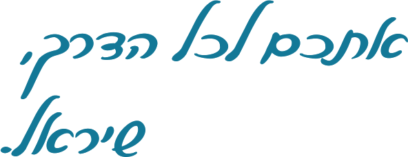

סמנו V על כל סעיף שסגרתםמזמינים את כל האחיםמתחילים מהחלומות, לא מהחובות
חלק א׳: הכסף 6 בדיקות
1כמה נכנס בחודש?
קצבת זקנה, תוספת ותק, פנסיות והכנסות נוספות
איך בודקים: אישור שנתי מביטוח לאומי ודוחות הקרנות
2מיצוי זכויות
השלמת הכנסה, ותק, דחיית קצבה והנחות לאזרח ותיק
איך בודקים: אתר "כל זכות" או סניף ביטוח לאומי
3מס על הקצבה
האם נעשה קיבוע זכויות (161ד)? האם המענקים נפרסו נכון?
איך בודקים: פקיד השומה, בליווי יועץ
4חסכונות אבודים
קרנות ישנות, קופות גמל ופוליסות שנשכחו
איך בודקים: אתר "הר הכסף" והמסלקה הפנסיונית
5הלוואות והוצאות
הלוואות יקרות, ביטוחים כפולים, חשבונות מנופחים
איך בודקים: דפי חשבון של 3 החודשים האחרונים
6הבית
כמה הוא שווה, ואילו אפשרויות יש: להישאר, להשכיר, דיור מוגן או משכנתה הפוכה
איך בודקים: שמאות או הערכת שווי, ושיחת ייעוץ
שיראל פרגר – יועץ משכנתאות | MAKESENSE

חלק ב׳: ההגנות
4 מקרים שלא תרצו שיקרו מקרים להמחשה
7צוואה וירושה
לא תרצו שזה יקרה…
אבא נפטר בלי צוואה, והדירה עברה בירושה לאמא ולשלושת האחים. כשאמא רצתה למכור ולעבור לדיור מוגן, אח אחד סירב, והכל נתקע.
הפתרון
צוואה מסודרת, למשל צוואה הדדית בין בני הזוג, שמותאמת לרצון ההורים. בן הזוג שנשאר חי בשקט, והמשפחה נשארת מאוחדת.
8ייפוי כוח מתמשך
לא תרצו שזה יקרה…
אמא אובחנה בדמנציה, ואף אחד לא יכול לפעול בחשבון הבנק שלה. הילדים נאלצו לפנות לבית משפט כדי להתמנות לאפוטרופוסים, תהליך של חודשים.
הפתרון
ייפוי כוח מתמשך שנחתם מראש בפני עורך דין שהוסמך לכך. ההורים בוחרים בעצמם מי יחליט בשבילם, ובדיוק לפי רצונם.
9ביטוח סיעודי
לא תרצו שזה יקרה…
אבא עבר אירוע מוחי והפך סיעודי. מטפלת צמודה עולה אלפי שקלים בחודש, והחסכונות של ההורים נגמרו תוך שנה.
הפתרון
בודקים מראש איזה ביטוח סיעודי יש ולכמה שנים (בקופת החולים, הרובד הבסיסי משלם עד 5 שנים), ומגישים בזמן לגמלת סיעוד. משכנתה הפוכה יכולה לשמש גיבוי.
10ביטוחי בריאות
לא תרצו שזה יקרה…
אמא נזקקה לניתוח, ואז התברר שהביטוח הפרטי שלה בוטל לפני שנים, כי הוראת קבע נפלה ואף אחד לא שם לב.
הפתרון
ממפים את כל הביטוחים באתר "הר הביטוח", מבטלים כפילויות ושומרים על מה שחשוב באמת.
רוצים לעבור על הרשימה יחד?
בדיקה משפחתית: שעה אחת, כל המשפחה, תוכנית ברורה. ללא התחייבות.
052-441-5395
שיראל פרגר – יועץ משכנתאות | MAKESENSE
חלק ג׳: השיחה והתיק
השיחה של השבת הקרובה 5 שאלות
מתחילים מהחלומות, לא מהחובותמזמינים את כל האחיםלא מחליטים בשיחה הראשונה
1
מה הייתם רוצים לעשות בשנים הקרובות?
2
כמה נכנס וכמה יוצא בכל חודש?
3
איפה נמצאים החסכונות, הפנסיות והביטוחים?
4
יש צוואה וייפוי כוח מתמשך? איפה הם?
5
ממה אתם הכי חוששים?
התיק המשפחתי 8 מסמכים
תיקייה אחת שכל הילדים יודעים איפה היא. ביום שצריך אותה, אין זמן לחפש.
פרטי חשבונות הבנק ואיש קשר בסניף
פוליסות: בריאות, סיעוד, חיים ומבנה
דוחות שנתיים מהפנסיה ומקופות הגמל
נסח טאבו ומסמכי הדירה
צוואה וייפוי כוח מתמשך, או איפה הם מופקדים
אישורים מביטוח לאומי
רשימת תרופות, רופאים וקופת החולים
סיסמאות לאתרים, שמורות במקום בטוח
המידע כללי ואינו מהווה ייעוץ אישי, משפטי, פנסיוני או ביטוחי. בענייני צוואה, ייפוי כוח, פנסיה וביטוח מומלץ להיעזר בעורך דין ובבעל רישיון מתאים. המקרים להמחשה בלבד.